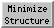

Minimize Structure 
Minimize Structure energy-minimizes molecule models, optionally
holding some atoms fixed. Minimization routines are provided by
MMTK,
which is included with Chimera.
Amber
parameters are used for standard residues, and Amber's
Antechamber module (also included with Chimera)
is used to assign parameters to nonstandard residues.
See also: Molecular Dynamics Simulation
Minimize Structure is in development and
has several limitations.
It is intended for cleaning up small molecule structures and
improving localized interactions within larger systems.
It may not be able to resolve large-scale distortions
or widespread structural problems.
By definition, energy-minimization simply moves the system toward a local
minimum without crossing energy barriers, and does not search for the
global minimum.
There are several ways to start
Minimize Structure, a tool in the Structure Editing category.
It is also implemented as the command
minimize.
Models to minimize
can be chosen from the list with the left mouse button.
Ctrl-click toggles the status of an individual model.
To choose a block of models without dragging,
click on the first (or last) and then Shift-click
on the last (or first) in the desired block.
All chosen models are treated as a single system for energy calculations;
other models are ignored.
Within the chosen models, all atoms are included in energy calculations,
regardless of whether they are held fixed.
(However, parts of models can be excluded from energy calculations using the
minimize command with
fragment true.)
Steepest descent minimization
is performed first to relieve highly unfavorable clashes, followed by
conjugate gradient minimization,
which is much slower but more effective at reaching an energy minimum
after severe clashes have been relieved.
Energies (kJ/mol) are reported in the
Reply Log.
**Step numbers reported by MMTK are 2 greater than the actual numbers
of minimization steps performed. The additional “steps”
are not minimization steps but operations required to obtain gradient
values and updated coordinates.**
- Steepest descent steps (default 100)
- number of steps of steepest descent minimization to perform before
any conjugate gradient minimization
- Steepest descent step size (Å) (default 0.02)
- initial step length for steepest descent minimization
- Conjugate gradient steps (default 10)
- number of steps of conjugate gradient minimization to perform after
finishing any steepest descent minimization
- Conjugate gradient step size (Å) (default 0.02)
- initial step length for conjugate gradient minimization
- Update interval (default 10)
- how frequently to update the display, in terms of minimization steps
- Fixed atoms
- atoms to hold in place during minimization:
- none (default) - all atoms will be allowed to move
- selected - any
selected atoms
should be held fixed, all other atoms allowed to move
- unselected - any
selected atoms
should be allowed to move, all other atoms held fixed
- Memorize options chosen in subsequent dialogs
- as explained below, Dock Prep
and further tools may be called to prepare structures for minimization;
this option specifies saving their settings in the
preferences file
for future uses of Minimize Structure
or Molecular Dynamics Simulation
- Use previously memorized options, if any
- use settings saved with the preceding option in a prior use of
Minimize Structure
or Molecular Dynamics Simulation
- Neither memorize nor use memorized options
- do not use previously saved settings; show the dialogs so that
settings can be chosen explicitly for the current calculation,
but do not save the settings
Clicking Minimize dismisses the dialog
(unless the option to Keep dialog up after Minimize is checked)
and may call Dock Prep to
perform several tasks
to prepare the system for energy calculations.
In turn, Dock Prep
may call additional tools:
- AddH to add hydrogens.
If Minimize has already been clicked,
the selection
will be adjusted prior to minimization to include any newly attached atoms
in the fixed and movable sets.
Note that any other models in the vicinity will influence hydrogen
placement even if hydrogens are not being added to those other models.
If such interactions are not desired, the other models should
be closed beforehand.
- Add Charge
to associate atoms with partial charges and other
force field parameters.
Required even when
alternative charges will be used.
It is sometimes useful to run
Dock Prep independent of
Minimize Structure beforehand, then skip all tasks when it reappears
after Minimize is clicked:
- adding hydrogens separately beforehand allows them
to be deleted or repositioned as needed prior to minimization
- adding charges separately beforehand allows
alternative charges
to be specified prior to minimization
Close dismisses the Minimize Structure dialog.
Help opens this manual page in a browser window.
Force Field Parameters
Different procedures are used to assign parameters to
standard residues,
monatomic ions, and
nonstandard residues.
Standard residues include water, standard amino acids,
standard nucleic acids, and a few common variants and capping groups.
- Add Charge
recognizes standard residues based on their atom and residue names
and assigns Amber residue names, Amber atom types,
and atomic partial charges from an Amber force field
chosen by the user, default ff14SB
(details).
- Minimize Structure uses the Amber atom types to associate
the atoms with other parameters from the chosen force field.
Monatomic ions are assigned user-specified net charges and
Amber VDW parameters. The following ions are handled:
Li+,
Na+, K+, Rb+, Cs+,
F–, Cl–,
Br–, I–,
Mg2+, Ca2+, Zn2+.
In addition, Fe ion nonbonded parameters are taken from the heme residue
in the Amber parameter database.
See Limitations for how to add types.
Nonstandard residues are all residues not recognized as
standard residues or
monatomic ions.
- Add Charge uses
Amber's Antechamber module (included with Chimera)
to assign GAFF types and calculate atomic
partial charges within each nonstandard residue.
It is necessary to specify the formal charge of each nonstandard residue
and which charge
calculation method should be used.
Publications involving
Antechamber use should cite:
Automatic atom type and bond type perception in molecular mechanical
calculations.
Wang J, Wang W, Kollman PA, Case DA.
J Mol Graph Model. 2006 Oct;25(2):247-60.
Note that Antechamber/GAFF are meant to handle most small organic molecules,
but not metal complexes, inorganic compounds, or unstable species such as
radicals, and may not work well on highly charged molecules.
- Minimize Structure uses the GAFF types to associate
nonstandard residues with parameters other than charges.
The GAFF atom types and associated parameters are described
online
and in:
Development and testing of a general amber force field.
Wang J, Wolf RM, Caldwell JW, Kollman PA, Case DA.
J Comput Chem. 2004 Jul 15;25(9):1157-74.
User-Specified Partial Charges
Arbitrary partial charges (such as obtained from the literature
or parameter databases)
can be specified. To do so:
- run Dock Prep independent
of Minimize Structure to perform any necessary tasks
including charge addition (thus running
Add Charge, which is
still needed to assign Amber/GAFF atom types)
- reassign the charge attribute of the atoms
to the desired values (using
Define Attribute,
defattr,
or setattr)
- run Minimize Structure and turn off all options in the ensuing
Dock Prep dialog, as
the necessary tasks have already been performed
Limitations
Lack of access to many settings.
There is no way to specify several MMTK settings, including distance cutoffs.
MMTK defaults are used.
Evaluating all pairwise nonbonded interactions regardless of interatomic
distance makes the calculation relatively slow.
Limited ability to use arbitrary parameters.
It is difficult to change or add parameters.
Arbitrary partial charges can be specified.
Experts can adjust parameters (other than charge)
of standard residues
and monatomic ions by editing files in
bin/amberN/dat/leap/parm/ within the Chimera installation
(where N is a number, for example amber16).
The following parameter files are used:
- ff14SB: parm10.dat + frcmod.ff14SB
+ frcmod.ionsjc_tip3p
- ff03ua: parm99.dat + frcmod.ff03 + frcmod.ff03ua
+ frcmod.ionsjc_tip3p
(the united-atom force field is not supported by minimization, however;
see note)
- ff03.r1: parm99.dat + frcmod.ff03
+ frcmod.ionsjc_tip3p
- ff02pol.r1: parm99.dat + frcmod.ff02pol.r1 + frcmod.ionsjc_tip3p
(the polarizable force field is not supported by minimization, however;
see note)
In addition, a custom frcmod file (not included with the Amber distribution) is
used to specify Fe ion nonbonded parameters taken from the heme residue in the
Amber parameter database
(Bryce Group, University of Manchester).
To add an element that is not already handled, it may also be
necessary to create a file for that element in the
MMTK atom database within the Chimera installation.
For example, to handle Li+, there is a file
lib/python*/site-packages/MMTK/Database/Atoms/li
(where * is the appropriate python version number) containing the following:
name = 'lithium'
symbol = 'Li'
mass = 6.941
UCSF Computer Graphics Laboratory / May 2020